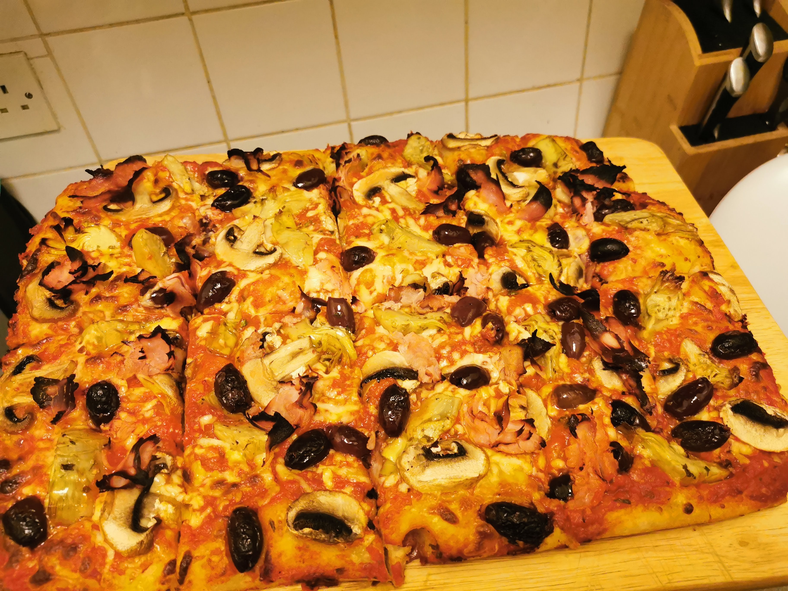

Sourdough Pizza Capricciosa

Description: Pizza with ham, mushroom, olive, and artichoke
Pizza Capricciosa is a frequent treat at our house, made over a few hours with our 3 year old sourdough the base comes out spongy and flavourful.
a mix of ciabatta and pizza
Ingredience:
- 500g strong bread flour (00 grade if you can get it)
- 200g sourdough starter
- 300ml water
- 1 container tomato passata
- 200g grated mozzarella
- 250g sliced artichokes
- 200g sliced mushrooms
- 100g sliced ham
- 150g black olives
- mixed herbs
- salt
Method
- in a stand mixer, mix the sourdough starter and the water together
- add the flour and 10g of salt, mix until fully combined
- let mixture rest for 30 minutes to autolyse
- using a dough hook, knead the dough for roughly 15 minutes until it has come together to a smooth ball
- place in a lightly oiled tupperware container somewhere warm
- let rise until at least doubled in size
- take the dough by one side and stretch out, once you've placed it down, stretch it along the other side